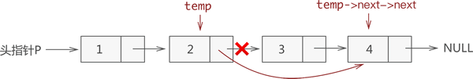
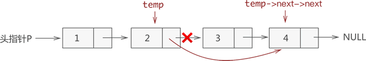

单链表的基本操作（C语言版）
《什么是单链表》一节我们学习了如何使用链表存储数据元素，以及如何使用 C 语言创建链表。本节将详细介绍对链表的一些基本操作，包括对链表中数据的添加、删除、查找（遍历）和更改。
注意，以下对链表的操作实现均建立在已创建好链表的基础上，创建链表的代码如下所示：
虽然新元素的插入位置不固定，但是链表插入元素的思想是固定的，只需做以下两步操作，即可将新元素插入到指定的位置：
例如，我们在链表

图 1 链表中插入元素的 3 种情况示意图
从图中可以看出，虽然新元素的插入位置不同，但实现插入操作的方法是一致的，都是先执行步骤 1 ，再执行步骤 2。
其中，从链表上摘除某节点的实现非常简单，只需找到该节点的直接前驱节点 temp，执行一行程序：

图 2 链表删除元素示意图
因此，链表删除元素的 C 语言实现如下所示：
因此，链表中查找特定数据元素的 C 语言实现代码为：
直接给出链表中更新数据元素的 C 语言实现代码：
注意，以下对链表的操作实现均建立在已创建好链表的基础上，创建链表的代码如下所示：
//声明节点结构
typedef struct Link{
int elem;//存储整形元素
struct Link *next;//指向直接后继元素的指针
}link;
//创建链表的函数
link * initLink(){
link * p=(link*)malloc(sizeof(link));//创建一个头结点
link * temp=p;//声明一个指针指向头结点，用于遍历链表
//生成链表
for (int i=1; i<5; i++) {
//创建节点并初始化
link *a=(link*)malloc(sizeof(link));
a->elem=i;
a->next=NULL;
//建立新节点与直接前驱节点的逻辑关系
temp->next=a;
temp=temp->next;
}
return p;
}
从实现代码中可以看到，该链表是一个具有头节点的链表。由于头节点本身不用于存储数据，因此在实现对链表中数据的"增删查改"时要引起注意。链表插入元素
同顺序表一样，向链表中增添元素，根据添加位置不同，可分为以下 3 种情况：- 插入到链表的头部（头节点之后），作为首元节点；
- 插入到链表中间的某个位置；
- 插入到链表的最末端，作为链表中最后一个数据元素；
虽然新元素的插入位置不固定，但是链表插入元素的思想是固定的，只需做以下两步操作，即可将新元素插入到指定的位置：
- 将新结点的 next 指针指向插入位置后的结点；
- 将插入位置前结点的 next 指针指向插入结点；
例如，我们在链表
{1,2,3,4} 的基础上分别实现在头部、中间部位、尾部插入新元素 5，其实现过程如图 1 所示：图 1 链表中插入元素的 3 种情况示意图
从图中可以看出，虽然新元素的插入位置不同，但实现插入操作的方法是一致的，都是先执行步骤 1 ，再执行步骤 2。
注意：链表插入元素的操作必须是先步骤 1，再步骤 2；反之，若先执行步骤 2，除非再添加一个指针，作为插入位置后续链表的头指针，否则会导致插入位置后的这部分链表丢失，无法再实现步骤 1。
通过以上的讲解，我们可以尝试编写 C 语言代码来实现链表插入元素的操作：
//p为原链表，elem表示新数据元素，add表示新元素要插入的位置
link * insertElem(link * p, int elem, int add) {
link * temp = p;//创建临时结点temp
//首先找到要插入位置的上一个结点
for (int i = 1; i < add; i++) {
temp = temp->next;
if (temp == NULL) {
printf("插入位置无效\n");
return p;
}
}
//创建插入结点c
link * c = (link*)malloc(sizeof(link));
c->elem = elem;
//向链表中插入结点
c->next = temp->next;
temp->next = c;
return p;
}
链表删除元素
从链表中删除指定数据元素时，实则就是将存有该数据元素的节点从链表中摘除，但作为一名合格的程序员，要对存储空间负责，对不再利用的存储空间要及时释放。因此，从链表中删除数据元素需要进行以下 2 步操作：- 将结点从链表中摘下来;
- 手动释放掉结点，回收被结点占用的存储空间;
其中，从链表上摘除某节点的实现非常简单，只需找到该节点的直接前驱节点 temp，执行一行程序：
temp->next=temp->next->next;
例如，从存有{1,2,3,4} 的链表中删除元素 3，则此代码的执行效果如图 2 所示：
图 2 链表删除元素示意图
因此，链表删除元素的 C 语言实现如下所示：
//p为原链表，add为要删除元素的值
link * delElem(link * p, int add) {
link * temp = p;
//遍历到被删除结点的上一个结点
for (int i = 1; i < add; i++) {
temp = temp->next;
if (temp->next == NULL) {
printf("没有该结点\n");
return p;
}
}
link * del = temp->next;//单独设置一个指针指向被删除结点，以防丢失
temp->next = temp->next->next;//删除某个结点的方法就是更改前一个结点的指针域
free(del);//手动释放该结点，防止内存泄漏
return p;
}
我们可以看到，从链表上摘下的节点 del 最终通过 free 函数进行了手动释放。链表查找元素
在链表中查找指定数据元素，最常用的方法是：从表头依次遍历表中节点，用被查找元素与各节点数据域中存储的数据元素进行比对，直至比对成功或遍历至链表最末端的NULL（比对失败的标志）。因此，链表中查找特定数据元素的 C 语言实现代码为：
//p为原链表，elem表示被查找元素、
int selectElem(link * p,int elem){
//新建一个指针t，初始化为头指针 p
link * t=p;
int i=1;
//由于头节点的存在，因此while中的判断为t->next
while (t->next) {
t=t->next;
if (t->elem==elem) {
return i;
}
i++;
}
//程序执行至此处，表示查找失败
return -1;
}
注意，遍历有头节点的链表时，需避免头节点对测试数据的影响，因此在遍历链表时，建立使用上面代码中的遍历方法，直接越过头节点对链表进行有效遍历。链表更新元素
更新链表中的元素，只需通过遍历找到存储此元素的节点，对节点中的数据域做更改操作即可。直接给出链表中更新数据元素的 C 语言实现代码：
//更新函数，其中，add 表示更改结点在链表中的位置，newElem 为新的数据域的值
link *amendElem(link * p,int add,int newElem){
link * temp=p;
temp=temp->next;//在遍历之前，temp指向首元结点
//遍历到待更新结点
for (int i=1; i<add; i++) {
temp=temp->next;
}
temp->elem=newElem;
return p;
}
总结
以上内容详细介绍了对链表中数据元素做"增删查改"的实现过程及 C 语言代码，在此给出本节的完整可运行代码：
#include <stdio.h>
#include <stdlib.h>
typedef struct Link {
int elem;
struct Link *next;
}link;
link * initLink();
//链表插入的函数，p是链表，elem是插入的结点的数据域，add是插入的位置
link * insertElem(link * p, int elem, int add);
//删除结点的函数，p代表操作链表，add代表删除节点的位置
link * delElem(link * p, int add);
//查找结点的函数，elem为目标结点的数据域的值
int selectElem(link * p, int elem);
//更新结点的函数，newElem为新的数据域的值
link *amendElem(link * p, int add, int newElem);
void display(link *p);
int main() {
//初始化链表（1，2，3，4）
printf("初始化链表为：\n");
link *p = initLink();
display(p);
printf("在第4的位置插入元素5：\n");
p = insertElem(p, 5, 4);
display(p);
printf("删除元素3:\n");
p = delElem(p, 3);
display(p);
printf("查找元素2的位置为：\n");
int address = selectElem(p, 2);
if (address == -1) {
printf("没有该元素");
}
else {
printf("元素2的位置为：%d\n", address);
}
printf("更改第3的位置上的数据为7:\n");
p = amendElem(p, 3, 7);
display(p);
return 0;
}
link * initLink() {
link * p = (link*)malloc(sizeof(link));//创建一个头结点
link * temp = p;//声明一个指针指向头结点，用于遍历链表
//生成链表
for (int i = 1; i < 5; i++) {
link *a = (link*)malloc(sizeof(link));
a->elem = i;
a->next = NULL;
temp->next = a;
temp = temp->next;
}
return p;
}
link * insertElem(link * p, int elem, int add) {
link * temp = p;//创建临时结点temp
//首先找到要插入位置的上一个结点
for (int i = 1; i < add; i++) {
temp = temp->next;
if (temp == NULL) {
printf("插入位置无效\n");
return p;
}
}
//创建插入结点c
link * c = (link*)malloc(sizeof(link));
c->elem = elem;
//向链表中插入结点
c->next = temp->next;
temp->next = c;
return p;
}
link * delElem(link * p, int add) {
link * temp = p;
//遍历到被删除结点的上一个结点
for (int i = 1; i < add; i++) {
temp = temp->next;
if (temp->next == NULL) {
printf("没有该结点\n");
return p;
}
}
link * del = temp->next;//单独设置一个指针指向被删除结点，以防丢失
temp->next = temp->next->next;//删除某个结点的方法就是更改前一个结点的指针域
free(del);//手动释放该结点，防止内存泄漏
return p;
}
int selectElem(link * p, int elem) {
link * t = p;
int i = 1;
while (t->next) {
t = t->next;
if (t->elem == elem) {
return i;
}
i++;
}
return -1;
}
link *amendElem(link * p, int add, int newElem) {
link * temp = p;
temp = temp->next;//tamp指向首元结点
//temp指向被删除结点
for (int i = 1; i < add; i++) {
temp = temp->next;
}
temp->elem = newElem;
return p;
}
void display(link *p) {
link* temp = p;//将temp指针重新指向头结点
//只要temp指针指向的结点的next不是Null，就执行输出语句。
while (temp->next) {
temp = temp->next;
printf("%d ", temp->elem);
}
printf("\n");
}
代码运行结果：
初始化链表为：
1 2 3 4
在第4的位置插入元素5：
1 2 3 5 4
删除元素3:
1 2 5 4
查找元素2的位置为：
元素2的位置为：2
更改第3的位置上的数据为7:
1 2 7 4
关注公众号「站长严长生」，在手机上阅读所有教程，随时随地都能学习。内含一款搜索神器，免费下载全网书籍和视频。

微信扫码关注公众号